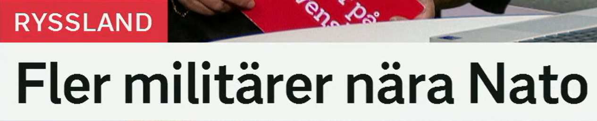
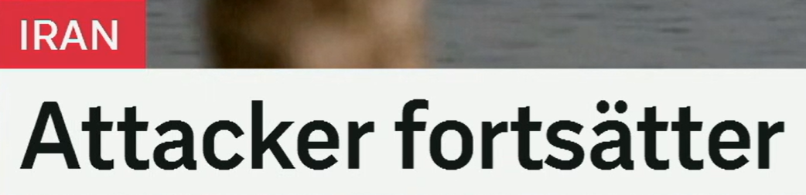
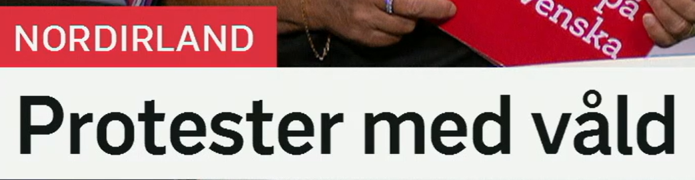
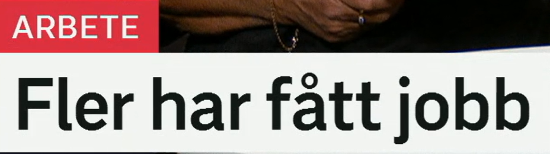
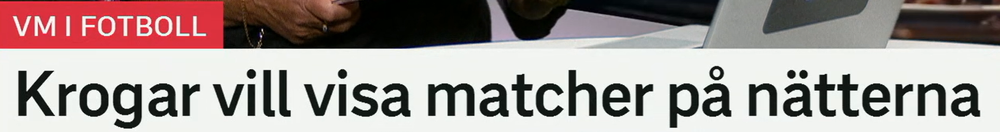
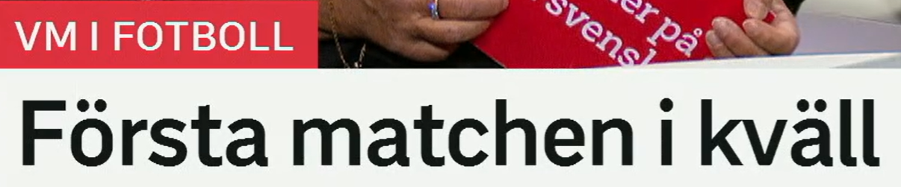

Fler militärer nära Nato
北约附近有更多军人。
更多的，用于可数名词。
近义表达：allt fler 越来越多，ett större antal 更多数量，flera 若干。
en militär 军人，也可作形容词“军事的”。
相关词：soldater 士兵，trupper 部队，styrkor 武装力量，förband 部队单位。
靠近、接近。nära Nato = 在北约附近/靠近北约。
Trupper finns nära gränsen. 部队在边境附近。
军事部署
Fler militärer nära X 可扩展为：Det finns fler militärer nära X.

Attacker fortsätter
袭击仍在继续。
en attack 袭击，复数 attacker。
近义词：angrepp 攻击，anfall 进攻，bombningar 轰炸。
原形 fortsätta，继续。
近义词：pågår 正在进行，håller i sig 持续，fortgår 继续进行。
Striderna fortsätter. 战斗继续。
持续动作
X fortsätter = X 继续。也可说 X pågår fortfarande。

Protester med våld
伴随暴力的抗议。
en protest 抗议；动词 protestera 抗议。
相关词：demonstration 示威，upplopp 骚乱，missnöje 不满。
våld 暴力。med våld = 以暴力方式/伴随暴力。
相关词：våldsamma protester 暴力抗议，oroligheter 动乱，sammandrabbningar 冲突。
社会冲突标题
Protester med våld 可说成 våldsamma protester，意思更凝练。

Fler har fått jobb
更多人已经找到了工作。
原形 få，获得；har fått 已经获得。
近义表达：har fått arbete 获得工作，har anställts 已被雇用，har börjat jobba 已开始工作。
ett jobb 工作，较口语；arbete 更正式。
相关词：anställning 雇用/职位，tjänst 职位，arbetsmarknad 劳动力市场。
就业标题
Fler har fått jobb 常用于就业数据变好。

Krogar vill visa matcher på nätterna
酒吧想在夜里播放比赛。
en krog 酒吧、餐馆。
近义词：bar 酒吧，pub 酒馆，restaurang 餐馆。
vilja 想要；visa 展示、播放。
相关表达：sända 播出，visa på tv 在电视上播放，streama 流媒体播放。
在夜里、夜间。对比 på dagen 白天，på kvällarna 晚上。
转播表达
visa matcher = 播放/转播比赛。match 在体育中是比赛。

Första matchen i kväll
今晚第一场比赛。
第一、首个。序数：andra 第二，tredje 第三。
en match 比赛；matchen 这场比赛。
相关词：final 决赛，semifinal 半决赛，turnering 锦标赛。
今晚。对比：i natt 夜里，i morgon 明天。
赛程标题
Första matchen i kväll 省略动词，可扩展为：Den första matchen spelas i kväll.
复习表：重点词 + 近义词 + 高频用法
| 关键词 | 近义/相关词 | 高频搭配 |
|---|---|---|
| militär | soldat, trupper, styrkor | fler militärer, nära gränsen |
| fortsätta | pågå, fortgå, hålla i sig | attacker fortsätter, arbetet fortsätter |
| protest | demonstration, upplopp, missnöje | protester med våld, våldsamma protester |
| jobb | arbete, anställning, tjänst | få jobb, söka jobb, fler har fått jobb |
| match | turnering, final, semifinal | visa matcher, första matchen, spela match |
练习 1
说“袭击仍在继续”。提示：Attackerna fortsätter.
练习 2
说“更多人找到了工作”。提示：Fler har fått jobb.
练习 3
把“今晚第一场比赛”译成瑞典语。提示：Första matchen i kväll.